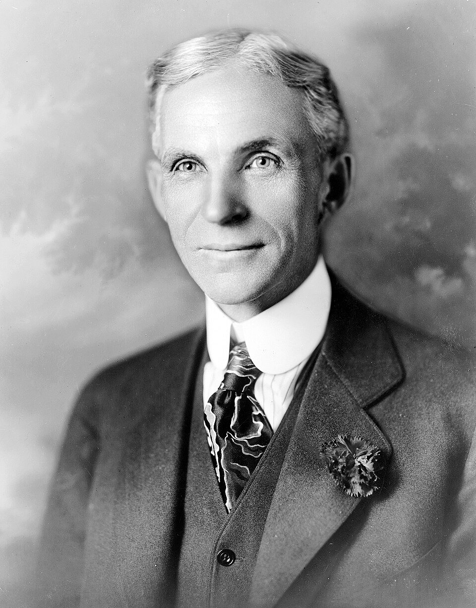

Esta ingenieria esta enfocada en la optimización de procesos, operaciones y sistemas dentro de las organizaciones, con el objetivo de ser mas eficaz, eficiente enfocados en la productividad y calidad de los bienes o servicios.
La palabra ingeniería tiene sus orígenes en el latín: ingenium que significa engendrar o producir con apoyo en el ingenio o la mente. Con el tiempo, el vocablo se convirtió en el francés engin y para el inglés engine, refiriéndose a las máquinas. La relación es clara, un ingeniero es aquel que produce, mejora y opera las máquinas que utilizamos los seres humanos.
La ingeniería industrial es una de las ramas de la ingeniería más versátiles y multidisciplinarias, ya que combina conocimientos de matemáticas, ciencias físicas, economía y gestión empresarial para resolver problemas complejos en diferentes sectores. Los ingenieros industriales trabajan en una amplia variedad de industrias, desde la manufactura y la logística hasta la salud y los servicios financieros. Su objetivo principal es mejorar la eficiencia y la productividad de las organizaciones, optimizando los procesos y utilizando los recursos de manera más efectiva. La ingeniería industrial también se enfoca en la gestión de la calidad, la seguridad y el medio ambiente, asegurando que los productos y servicios cumplan con los estándares requeridos y sean sostenibles a largo plazo.
En resumen, la ingeniería industrial es una disciplina clave para el desarrollo y la mejora de las organizaciones, que busca maximizar la eficiencia y la calidad de los procesos y productos, contribuyendo al crecimiento económico y social.
Algunas de las áreas clave en las que se enfoca la Ingeniería Industrial son:
Gestión de Operaciones:
Optimización de los procesos productivos de la organización, planificación de la producción o manufactura, gestión y control de inventarios, sistema de gestión de calidad, entre otras.
Logística:
Diseño de redes logísticas, gestión de flotas empresariales, optimización de rutas de distribución y transporte, gestión de almacenes e inventarios, entre otras.
Recursos Humanos:
Gestión del personal, diseño de los sistemas de capacitación de la organización, análisis de los puestos de trabajo, entre otras funciones importantes relacionadas con la gestión del recurso humano.
Gestión de la Cadena de Suministro:
Planificación y gestión de la cadena de suministro, desde la adquisición de materias primas hasta la entrega al cliente final.
Análisis de Datos:
Analisis de datos para la toma de decisiones para identificar patrones de comportamiento y mejorar procesos y las operaciones de la organizacion.
Historia y origen de la ingenieria industrial
Los inicios de la ingenieria industrial se remontan a finales del siglo XVIII, durante la Revolución Industrial en Inglaterra. En ese momento los avances tecnológicos cambiaban la forma en la que se producían los productos tras el surgimiento de la maquinaria y la mecanización de los procesos
Fue en este contexto que surgió la necesidad de optimizar la producción y los procesos de la industria. Los empresarios comenzaron a darse cuenta de que necesitaban aplicar métodos científicos y matemáticos para aumentar la eficiencia y reducir sus tiempos y costos, esto dio pie al nacimiento de la Ingeniería Industrial.
Los seres humanos, conforme evolucionamos, hemos utilizado las leyes de la física a nuestro favor para optimizar la administración de nuestros recursos. Desde tiempos ancestrales, nuestra especie entendió el funcionamiento de una rueda, la polea, las palancas y los tornillos. La agricultura, por ejemplo, siempre requirió de innovaciones tecnológicas para maximizar la producción alimentaria, cuya demanda, lógicamente, cada vez fue mayor. Durante las etapas de auge de las civilizaciones más antiguas se sentaron también las bases de la maquinaria de hoy; puedes contar con que Ingeniería Industrial es una carrera con siglos de respaldo.
Una vez en la etapa conocida como el Renacimiento, en el siglo XV, las sociedades europeas entraron en una fase de antropocentrismo. Es decir, la persona comenzaba a ser el centro del pensamiento individual y colectivo, y no lo relacionado a la religión, como antes. Este cambio de paradigma aumentó la velocidad con la que se crean nuevas tecnologías. La imprenta, por ejemplo, fue un invento insignia de este tiempo que necesitó de los ingenieros de entonces para construirse, operarse y distribuirse de la mejor forma. Es también durante este tiempo que acontece la separación entre el arquitecto y el ingeniero: el primero se dedicaría a la construcción de edificios y el segundo a la maquinaria. De hecho, el conocimiento de los ingenieros se dedicó a la defensa de los reyes, a la guerra.
Tres siglos después del Renacimiento, en el XVIII, comienza en Inglaterra la Revolución Industrial, el periodo de avance tecnológico más importante para la humanidad, además de un gran auge para la Ingeniería Industrial, desde luego. Los procesos de trabajo para las empresas comenzaba a consolidarse, las poblaciones se mudaron a zonas urbanas y la manufactura se aceleró más que nunca. Además, los procesos del comercio entre países se aceitaron, lo cual fomentó las economías internacionales, así como importación y exportación de productos.
para el siglo XIX, la Ingeniería Industrial se reconocía como una carrera en sí misma. En 1824, en Madrid, nace el Real Conservatorio de las Artes, el cual albergó después al Real Instituto Industrial, de los primeros lugares en el mundo donde surgió el título de ingeniero industrial. La disciplina fue tan popular durante sus primeros años que para 1889 se creó en España la Asociación Nacional de Ingenieros Industriales. Con el tiempo, la carrera de Ingeniería Industrial se volvió cada vez más necesaria en un mundo que, entrando al agitado siglo XX, necesitaría mucha más maquinaria, y a los operadores correctos para que corrieran de manera eficiente.
¿Que necesidades cubrieron los ingenieros industriales?
Optimización de la producción: con el surgimiento de la maquinaria y la mecanización de los procesos era necesario encontrar formas más eficientes de producir bienes. Por lo tanto, la Ingeniería Industrial se encargó de analizar y optimizar los procesos de producción para aumentar la productividad y reducir los costos.
Organización del trabajo: la maquinaria requirió una forma de organizar a los trabajadores y coordinar sus tareas de manera eficiente. En este caso, la Ingeniería Industrial se ocupó de diseñar estructuras organizativas y métodos de trabajo que permitieron la colaboración y coordinación efectiva entre los empleados.
Estudio científico de los procesos: para mejorar la productividad y reducir los costos era necesario aplicar métodos científicos y matemáticos en la gestión de los procesos de producción. La Ingeniería Industrial se centró en desarrollar técnicas y herramientas para estudiar y analizar estos con el objetivo de identificar áreas de mejora y optimizar los recursos.
Eficiencia en el uso de recursos: en un contexto de crecimiento industrial era fundamental encontrar formas más eficientes de utilizar los recursos disponibles como la energía, el espacio y los materiales. Por lo tanto, esta rama de la ingeniería se enfocó en el diseño de sistemas y métodos que permitieron una utilización efectiva y sostenible de estos recursos.
Mejora de la calidad y seguridad: con la producción masiva y la diversificación de productos era importante garantizar la calidad de los bienes y la seguridad de los trabajadores. Finalmente, la Ingeniería Industrial se ocupó de desarrollar técnicas para el control de calidad y la gestión de la seguridad en los procesos industriales.
Padres o pioneros de la ingenieria industrial
FREDERICK W. TAYLOR
Se le considera el padre de la Ingeniería Industrial y la Dirección Científica. Fue un ingeniero mecánico que influyó enormemente en los procesos industriales de manufactura de Estados Unidos y del mundo. En sus inicios, en la industria del acero, investigó sobre los mejores métodos de trabajo.
Entre sus aportes destaca el sistema diferencial de primas por pieza, la determinación científica de los estándares de trabajo y el establecimiento de la dirección científica.
HENRY FORD

Este empresario norteamericano, fundador de la compañía Ford Motor Company, es conocido en todo el mundo como el padre de las cadenas de producción modernas. Su principal aporte fue la producción en serie, un procedimiento que nació para reducir los costos de fabricación.
Henry Ford hizo varios aportes a la ingeniería industrial gracias a la adopción de tres principios básicos: el principio de intensificación, el principio de economicidad y el principio de productividad.
HENRY GANTT
Fue un ingeniero industrial mecánico estadounidense que impactó profundamente en el desarrollo de la filosofía de Dirección. Trabajó como consultor industrial y durante muchos años colaboró con Frederick Taylor en varias industrias.
Algunos de sus aportes más destacados fueron la gráfica de barras, conocida como carta o diagrama de Gantt, una herramienta de gestión y planificación de proyectos que ayuda a visualizar las tareas. También el estudio de la Dirección Científica, con una visión más humanística que Taylor, y varios trabajos en el campo de la motivación.
Los objetivos principales de la Ingeniería Industrial son:
Uno de los objetivos principales objetivos de la Ingenieria industrial es mejorar la eficiencia y la productividad de las organizaciones reduciendoles costos, optimizando sus procesos y utilizando los recursos de la misma de manera más eficiente
Sin descuidar el foco de aumentar la calidad de sus productos y servicios, asegurandose de que cumplan con los requisitos y especificaciones de sus clientes por medio de el control y el buen uso de la gestion de la calidad.
Otro de sus objetivos es resolver los problemas mas complejos Identificando, analizando y desarrollando soluciones innovadoras e implementándolas de manera efectiva.
Otro muy importante es promover la sostenibilidad diseñando procesos y sistemas que sean responsables con el medio ambiente
¿En que industrias puede trabajar un ingeniero industrial?
Los ingenieros industriales trabajan en un amplio abanico de sectores puesto que sus habilidades son necesarias en casi cualquier industria.
Algunos de los más comunes campos de acción de estos ingenieros son:
Aeroespacial
Auromatizacion
Productos de consumo
Construccion
Energetico
Procesamiento de alimentos
Asistencia sanitaria
Fabricacion de industria pesada
Tecnologia de la informacion
Seguros
Medico
productos farmaceuticos
robotica
Electronica
Electricidad
Datos y software
¿Cual es el perfil un ingeniero industrial?
El perfil de un ingeniero industrial es el de alguien que disfruta trabajando en equipo, resolviendo problemas y diseñando productos y servicios de forma mas eficiente con recursos limitados.
Un profesional en ingeniería industrial también trabaja en temas complejos como la mejora de los procesos de fabricación mediante el uso de herramientas tecnológicas avanzadas como programas informáticos, hardware, software etc.
Una persona egresada de Ingeniería Industrial sabe gestionar los sistemas de manufactura de las empresas o gobiernos. Es quien mejor sabe optimizar los recursos materiales con los que se cuentan y entender los proyectos con sus efectos integrales, es decir, en todas las áreas de una sociedad. El ingeniero industrial también está en contacto con la sociedad donde trabaja, en especial aquellas donde los proyectos son de su incumbencia, pues debe asegurarse de que no perjudique a nadie. Esto incluye el medio ambiente, una preocupación central de nuestro siglo a la que los ingenieros industriales no deben ser ajenos.
En general, un ingeniero industrial debe ser una persona analítica, creativa, con habilidades de liderazgo y capaz de trabajar en equipo. Además, debe tener una sólida formación en matemáticas, física y ciencias de la computación.
Por esto generalmente se espera que un ingeniero industrial cumpla con las siguientes características:
Ser innovador en todo momento.
Tener sentido de la urgencia cuando sea necesario.
Ser capaz de trabajar de forma independiente y sin supervisión.
Tener excelentes habilidades interpersonales, puesto que se trata de un perfil que debe relacionarse muy bien con otras áreas y profesionales.
Ser capaz de comunicarse de forma efectiva tanto moralmente como por escrito.
Tener excelentes habilidades para resolver problemas de forma creativa, innovadora y rapida
¿que se aprende en la ingenieria industrial
Al estudiar Ingeniería Industrial aprenderás a utilizar modelos matemáticos y programas informáticos para analizar diferentes aspectos de una empresa o una industria, como los costos de producción y la productividad laboral. En general, como ves, aprenderás sobre matemáticas, computación, gestión de costos y presupuestos, organización, etc.
Como pudimos apresiar en el video estas son algunas material del plan de estudio de ingenieria industrial mas comun que usan las universidades de colombia:
Matemáticas
Dibujo técnico
Programación de Computadores
Álgebra lineal
Cálculo I, II y III
Fundamentos de Química
Organización y Métodos
Física I, II y III
Investigación de Operaciones
Procesos industriales
Investigación de Operaciones
Procesos industriales
Contabilidad general
Probabilidades estadisticas
¿Cuanto gana un ingeniero industrial?
La ingenieria industrial es una de las ingenierías más demandas en Colombia. Según los informes del portal especializado elempleo.com los ingenieros industriales llevan varios años ocupando el top 3 de los profesionales más solicitados en el país. Como ves, esta carrera tiene un futuro laboral muy prometedor.
De acuerdo con Asocoldep, la Asociación Colombiana de Educación Privada, los ingenieros industriales están en la lista de las 20 carreras mejor pagadas en el país. De hecho, su tasa de empleabilidad o sus probabilidades de vincularse laboralmente con una empresa son de 85,6 %.
Ahora veamos puntualmente cuál es el salario promedio de un ingeniero industrial. Según Asocoldep, se estima que los ingenieros industriales tienen un salario inicial (el de un profesional sin experiencia) de alrededor de $ 1.908.346 pesos colombianos. Sin embargo, de acuerdo con Semana, los ingenieros industriales son uno de los profesionales que pueden llegar a ganar más de 10 millones de pesos al mes.
¿porque estudiar ingenieria industrial?
Como ingeniero industrial, vivirás una vida de resolución de problemas y creación de soluciones. Diseñarás nuevas máquinas, desarrollarás procesos de producción y establecerás normas de calidad. Si esto no te convence,
Estas son las principales razones para estudiar Ingeniería Industrial:
Es una profesión de mucha importancia para la sociedad.
Podrás explorar toda tu creatividad e imaginación al estar en un rol que constantemente debe innovar.
Es una de las carreras más solicitadas en el país y con una muy buena proyección de empleabilidad.
Podrás desempeñarte en un gran número de industrias o sectores, desde la producción de alimentos hasta la aeroespacial.
Podrás trabajar en el sector privado o el sector público.
Si no deseas emplearte en una organización, tu formación cono ingeniero industrial te permitirá convertirte en un emprendedor para innovar el mercado con un producto o servicio propio.
¿Que tan dificil es estudiar ingenieria industrial?
La dificultad de estudiar Ingeniería Industrial puede variar según la persona y su preparación previa. Sin embargo, en general, se considera una carrera desafiante debido a la combinación de matemáticas, física, economía y gestión empresarial que abarca.
Además, requiere habilidades analíticas, pensamiento lógico, capacidad para resolver problemas y una buena organización del tiempo, ya que los proyectos y trabajos en equipo suelen ser frecuentes.
Muchos estudiantes encuentran retadoras materias como estadística, investigación de operaciones, simulación y gestión de procesos, pero con dedicación y disciplina es posible superarlas.
Por otro lado, la carrera también ofrece muchas oportunidades para desarrollar habilidades prácticas y blandas, como liderazgo, comunicación y trabajo en equipo, que son muy valoradas en el mundo laboral.
En resumen, aunque puede ser exigente, estudiar Ingeniería Industrial es una experiencia enriquecedora que abre muchas puertas profesionales y personales.
LA DISTRIBUCIÓN DE PLANTA
La distribución de planta es una disciplina fundamental en la ingeniería industrial que consiste en organizar de manera eficiente los espacios, equipos, maquinaria y personal dentro de una empresa o fábrica. Su objetivo principal es optimizar el flujo de materiales, minimizar tiempos de desplazamiento y reducir costos operativos, asegurando así una mayor productividad y seguridad en las operaciones. Una buena distribución de planta facilita la supervisión, mejora la comunicación entre áreas y permite adaptarse a cambios en la producción. Además, contribuye a crear un ambiente de trabajo más ordenado y seguro, impactando positivamente en la calidad de los productos y en la satisfacción de los empleados.
Una correcta distribución de planta no solo impacta en la eficiencia y los costos, sino que también influye en la satisfacción de los empleados y en la seguridad laboral. Al reducir los desplazamientos innecesarios y mejorar la accesibilidad a los recursos, se fomenta un ambiente de trabajo más productivo y colaborativo, lo que puede traducirse en una mayor competitividad para la empresa.
En resumen, la distribución de planta es una herramienta clave en la ingeniería industrial que busca optimizar el uso del espacio y los recursos, mejorando así la eficiencia operativa y la calidad de los productos o servicios ofrecidos por una organización.
Ejemplo de distribución de planta en una empresa
¿Necesitas asesoría o tienes dudas? ¡Contáctame!
0
Proyectos
0
Años de experiencia
0
Cursos complementarios
Ubicación
Tips y Noticias de Ingeniería Industrial
Innovación y futuro: El impacto de la ingeniería industrial en el mundo moderno
La ingeniería industrial es mucho más que optimizar procesos: es la fuerza que impulsa la innovación en empresas y sociedades. Gracias a su visión integral, los ingenieros industriales lideran proyectos de transformación digital, automatización y sostenibilidad, adaptando las organizaciones a los retos del siglo XXI.
Desde la gestión inteligente de recursos hasta la implementación de tecnologías emergentes, la ingeniería industrial es clave para crear soluciones que mejoran la calidad de vida, potencian la competitividad y abren nuevas oportunidades en todos los sectores productivos.
5 herramientas digitales que todo ingeniero industrial debe conocer
Excel avanzado: Para análisis de datos, simulaciones y reportes.
Power BI: Visualización de datos y toma de decisiones basada en indicadores.
AutoCAD: Diseño y documentación de procesos y layouts de planta.
ERP (SAP, Oracle): Gestión integral de recursos empresariales.
Simulación de procesos: Optimización y modelado de sistemas productivos.
Dominar estas herramientas permite a los ingenieros industriales ser más eficientes, tomar mejores decisiones y liderar proyectos de transformación digital en sus empresas.
La filosofía Kaizen se basa en realizar pequeños cambios diarios que, a largo plazo, generan grandes mejoras en la eficiencia y calidad de los procesos. Aplicar Kaizen en la ingeniería industrial implica involucrar a todos los miembros del equipo, identificar oportunidades de mejora y medir los resultados para asegurar el crecimiento sostenido de la organización.
Recuerda: la mejora continua no es un proyecto con fin, sino una cultura que impulsa la excelencia y la innovación constante.
La industria 4.0 está revolucionando la ingeniería industrial mediante la integración de tecnologías como la inteligencia artificial, el internet de las cosas (IoT) y la automatización avanzada. Estas tendencias permiten a las empresas recopilar y analizar grandes volúmenes de datos en tiempo real, optimizar la producción y anticipar fallos antes de que ocurran.
Los ingenieros industriales que se actualizan en estas áreas tienen una ventaja competitiva y pueden liderar la transformación digital en sus organizaciones.
¿Cómo elegir tu especialización en ingeniería industrial?
La ingeniería industrial ofrece múltiples ramas de especialización como logística, calidad, producción, seguridad industrial y gestión ambiental. Para elegir la mejor opción, analiza tus intereses, investiga las tendencias del mercado laboral y consulta con profesionales del sector. Una buena especialización puede abrirte puertas a mejores oportunidades y crecimiento profesional.
No olvides que la formación continua es clave para destacar en un entorno tan dinámico como la industria.
La importancia del trabajo en equipo en la industria
El éxito de los proyectos industriales depende en gran medida de la colaboración entre diferentes áreas y profesionales. Fomentar la comunicación, la empatía y la responsabilidad compartida permite resolver problemas de manera más eficiente y alcanzar los objetivos organizacionales.
Un ingeniero industrial debe ser un líder capaz de motivar y coordinar equipos multidisciplinarios para lograr resultados sobresalientes.
La logística inteligente utiliza tecnologías como el Internet de las Cosas (IoT), la inteligencia artificial y el análisis de datos para optimizar el transporte, el almacenamiento y la distribución de productos. Esto permite a las empresas reducir costos, mejorar la trazabilidad y responder rápidamente a las demandas del mercado.
Adoptar soluciones de logística inteligente es fundamental para competir en un entorno globalizado y exigente.
La importancia de la ergonomía en la ingeniería industrial
La ergonomía es fundamental para adaptar los puestos de trabajo, herramientas y procesos a las capacidades y necesidades de los trabajadores. Un ingeniero industrial que aplica principios ergonómicos puede reducir lesiones, mejorar la productividad y aumentar la satisfacción laboral.
Implementar la ergonomía no solo previene enfermedades profesionales, sino que también optimiza el rendimiento de los equipos y reduce el ausentismo, generando beneficios tanto para los empleados como para la empresa.
Lean Manufacturing es una filosofía de gestión que busca eliminar desperdicios y optimizar los procesos productivos. Sus herramientas, como el mapa de flujo de valor, las 5S y el just-in-time, permiten a las empresas ser más competitivas y flexibles ante los cambios del mercado.
Adoptar Lean Manufacturing ayuda a reducir costos, mejorar la calidad y aumentar la satisfacción del cliente, convirtiéndose en una estrategia esencial para la industria moderna.
Como ingeniero industrial, puedo desempeñarme en áreas como logística, producción, calidad, recursos humanos, consultoría, gestión de proyectos y mejora de procesos.
Es importante que desarrolle habilidades en análisis de datos, liderazgo, comunicación, trabajo en equipo, pensamiento crítico y manejo de herramientas tecnológicas.
No, la ingeniería industrial es muy versátil y puedo trabajar en empresas de servicios, hospitales, bancos, consultorías, tecnología y muchos otros sectores.
Algunas materias clave son matemáticas, estadística, investigación de operaciones, gestión de la producción, calidad, logística y administración.
Sí, la formación en ingeniería industrial es reconocida internacionalmente y existen muchas oportunidades para trabajar fuera de mi país.
La ingeniería industrial se enfoca en optimizar procesos y recursos, mientras que otras ingenierías suelen centrarse en áreas técnicas específicas como electrónica, civil o mecánica.
Puedo liderar proyectos de mejora continua, implementación de sistemas de calidad, automatización de procesos, reducción de costos y optimización de la cadena de suministro.
No es obligatorio, pero tener conocimientos básicos de programación y manejo de software especializado puede darme una ventaja competitiva.
La carrera puede ser exigente, especialmente en matemáticas y gestión, pero con disciplina y organización es totalmente alcanzable.
Puedo crecer hasta puestos de supervisión, gerencia, dirección de operaciones o incluso emprender mi propio negocio.
Optimiza procesos, mejora la eficiencia y gestiona recursos en empresas.
¡Gracias por visitar mi sitio web!
Testimonios
¡Excelente servicio! - Juan
🍪 Usamos cookies para mejorar tu experiencia.
Saber más